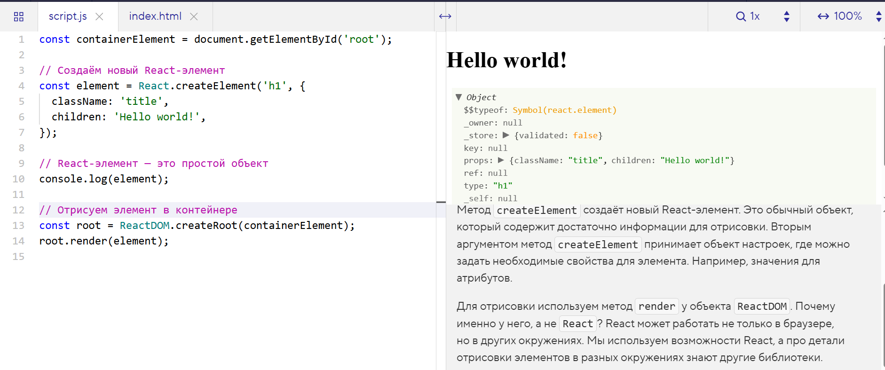

Начнём с простого: создадим и отрисуем новый элемент в DOM. Воспроизведём пример, рассмотренный в первом шаге, но только на этот раз воспользуемся библиотекой React.
Создадим и отрисуем (отрендерим) заголовок на странице. Для решения задачи воспользуемся методом createElement. Обратите внимание, мы вызываем метод напрямую у объекта React. Например:
Метод createElement создаёт новый React-элемент. Это обычный объект, который содержит достаточно информации для отрисовки. Вторым аргументом метод createElement принимает объект настроек, где можно задать необходимые свойства для элемента. Например, значения для атрибутов.
Для отрисовки используем метод render у объекта ReactDOM. Почему именно у него, а не React? React может работать не только в браузере, но в других окружениях. Мы используем возможности React, а про детали отрисовки элементов в разных окружениях знают другие библиотеки.
